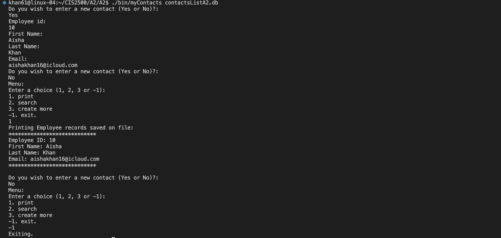
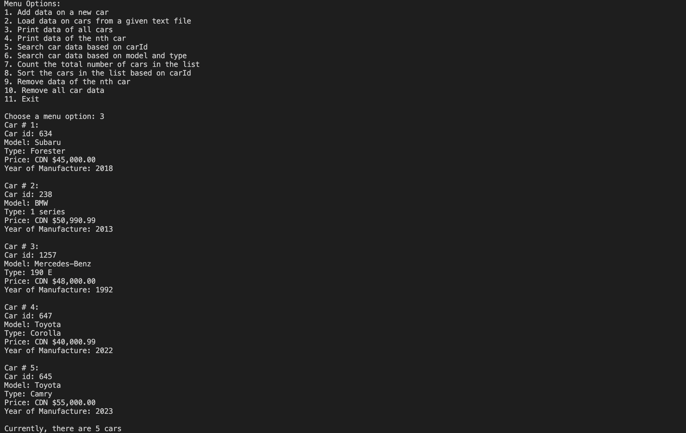

Here I'll introduce you to some of my personal projects I've worked on over the course of the last year, in languages C, C++. Python, Python 3 and HTML. Some of my more lengthy and advanced projects include:
Some of my smaller projects include:
In this project, I created a comprehensive Employee Contact Database Management System using C. The system offers a user-friendly interface for efficiently storing and retrieving employee contact information like names, IDs, and emails. Leveraging binary files and dynamic allocation, it ensures optimal storage and scalability. The system features a well-designed menu interface enabling users to search for employees by ID or name, print records, and add new entries seamlessly. Rigorous error handling and data integrity checks guarantee the reliability and consistency of the database, making it a robust solution for managing employee records efficiently.
CarManager is a sophisticated software solution designed to streamline the organization and management of car information within the OneCarSolution warehouse. Built upon the robust foundation of a dynamic linked list implemented in C programming, CarManager offers a versatile platform for storing, updating, and accessing vital car data. In this project I utilized a dynamic linked list structure to efficiently store and manage car information. This allows for flexible memory allocation and optimized performance, ensuring scalability as the warehouse's car inventory grows. CarManager features an intuitive user interface that prompts the user with a menu, allowing them to add, edit, and remove car information. With just a few clicks, users can input or modify details such as car make, model, year, VIN, and more. By leveraging the power of C programming, CarManager ensures efficient data management operations. Whether it's sorting cars by make or searching for specific models, the system delivers quick and accurate results, enhancing productivity and workflow efficiency. By providing a seamless user experience and robust functionality, it empowers the company to maintain optimal organization and efficiency in its operations.
In this project, I implemented code that prompts the user with several trivia questions based on the University of Guelph's history. The user then selects an answer (a-d) to each multiple choice question and wins points based on how many questions they got right. This game can serve as a fun way for new students to get to know more about the University's history, facts about our ethos, including morals, slogan, mascot information, etc.
In this Python project, I developed two efficient functions, fibonacciRecursive and fibonacciIterative, to calculate Fibonacci numbers based on user input. Leveraging both recursion and iteration, these functions generate Fibonacci sequences swiftly and accurately, catering to different computational preferences. This versatile tool empowers users to explore Fibonacci numbers of any desired order with ease and precision, offering a valuable resource for mathematical exploration and problem-solving.
This project involved crafting an immersive HTML webpage dedicated to Canadian Donuts. This was my first HTML project where I learned a lot about CSS styling, and HTML aesthetics in implementation. Through engaging content, users can delve into the history of Canadian Donuts, explore popular flavors, and discover must-visit locations. The webpage integrates hyperlinks, lists, images, and interactive elements seamlessly to captivate users and enhance their browsing experience. Structured lists and detailed articles provide comprehensive insights into various aspects of Canadian Donuts culture, enticing visitors to delve deeper into the world of delicious pastries.
This project involved designing a straightforward C calculator capable of performing essential arithmetic operations, including addition, subtraction, multiplication, and division. This was my very first project in C, where I learned many basic coding skills and mathematical operation implementation. The calculator features intuitive input prompts, robust error handling mechanisms, and ensures smooth user interaction and accurate computation results. With its simplicity and practicality, it serves as a reliable tool for basic mathematical calculations in various contexts.